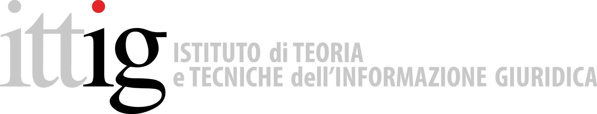
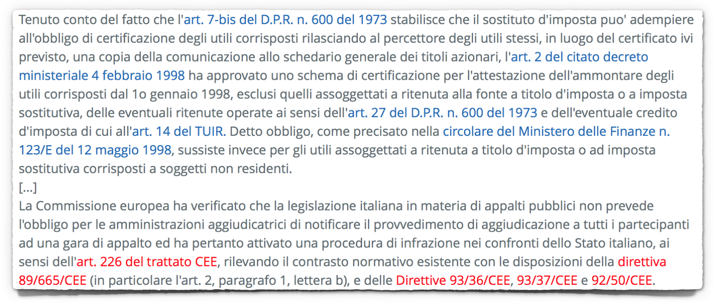

Linkoln, il software per l'estrazione automatica di riferimenti normativi dai testi legislativi italiani.

Il progetto, promosso e finanziato dal Servizio Informatica del Senato della Repubblica e realizzato dall'Istituto di Teoria e Tecniche dell'Informazione Giuridica del CNR (ITTIG), è finalizzato allo sviluppo di uno strumento che migliori le prestazioni di xmLegesLinker, il precedente parser di riferimenti normativi sviluppato e distribuito da Ittig dal 2003.
Obiettivi primari del nuovo sviluppo sono:
- la realizzazione di una libreria Java rilasciata con codice sorgente aperto;
- l'utilizzo di identificatori standard nazionali ed europei;
- l'allargamento della copertura delle autorità emananti italiane, compresi i Ministeri;
- il supporto al riconoscimento di citazioni multiple, sia a interi testi legislativi che a partizioni;
- la capacità di riconoscere alias normativi nazionali ed europei;
- il supporto all'identificazione delle citazioni alla legislazione europea.
Partecipazione
Il progetto si propone di coinvolgere la comunità degli utilizzatori, a partire dai soggetti istituzionali (Parlamento, Governo, Ministeri, Regioni, Autorità, Poligrafico), per la segnalazione dei casi non coperti, dei bug e per richiedere l'implementazione di nuove features, oltre a fornire la possibilità di accedere e contribuire al codice sorgente dell'applicazione.
È possibile testare Linkoln liberamente ed inviare le opportune segnalazioni riguardanti casi di citazioni non rilevate o identificatori errati attraverso questa pagina.
Gli identificatori
I riferimenti estratti dai testi sono rappresentati tramite degli identificatori standard per la legislazione che consentono la risoluzione e il reperimento in rete del documento citato o di sue specifiche partizioni. Gli standard attualmente supportati da Linkoln sono:
- urn:nir, il formato in uso in Italia per l'identificazione delle risorse legislative, adottato e supportato anche dal portale della legislazione vigente Normattiva;
- CELEX, l'identificatore univoco dei documenti ospitati su EUR-Lex, il portale per l'accesso al diritto dell'Unione europea.
È inoltre previsto l'allargamento del supporto a due ulteriori formati di identificazione, non appena le specifiche saranno consolidate e adottate ufficialmente:
- urn:lex, la specifica internazionale nata come evoluzione dello standard urn:nir per l'attribuzione di un nome uniforme alle risorse giuridiche;
- ELI (European Legislation Identifier), l'identificatore unico della legislazione nazionale europea in formato URI HTTP che gli stati membri possono implementare su base volontaria definendo le proprie specifiche.
Linkoln
Copertura e valutazione
Compito del software di riconoscimento delle citazioni legislative testuali è quello di garantire la massima copertura della estrema variabilità negli stili di citazione (ordine dei campi della citazione, uso di forme abbreviate, citazioni multiple, utilizzo di alias), delle diverse tipologie di documento citato e delle numerose possibili autorità emananti, inclusa la copertura dello storico e del pregresso.
In fase di analisi è stata individuata un'ampia casistica di forme di citazione testuale, tipologie di documento normativo e autorità emananti. È possibile apprezzare alcune di queste variazioni nella tabella di copertura prodotta nel corso del progetto allo scopo di valutare i miglioramenti di Linkoln rispetto ai precedenti software.
Licenza
Linkoln è rilasciato con licenza GNU GENERAL PUBLIC LICENSE Version 3.
Contacts & Credits
Progetto coordinato da Tommaso Agnoloni (ITTIG) e
Carlo Marchetti (Senato della Repubblica). Linkoln è sviluppato da Lorenzo Bacci.
Per informazioni e segnalazioni: linkoln@ittig.cnr.it
(link alle issues su Github https://github.com/Ittig/Linkoln/issues)